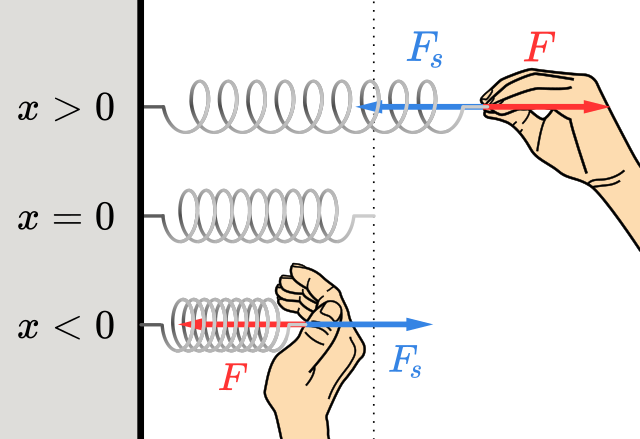

O que é força elástica
Olá!
Aqui você aprenderá sobre a força elástica
Força elástica é uma força física associada à compressão ou tração de corpos que têm elasticidade (molas,
borrachas e outros tipos de elásticos em geral). Didaticamente falando, é a força necessária
para deformar (seja diminuindo, seja aumentando o comprimento) um corpo elástico qualquer.
Como o próprio termo “elástica” sugere, ao ler sobre esse tipo de força, você deve automaticamente concluir que o problema físico em questão se trata de objetos que obrigatoriamente serão deformados, ou seja, sofrerão variações em relação ao seu comprimento inicial.
Trabalho da força elástica
Todo tipo de força na física é capaz de realizar um certo trabalho. Com a força elástica não é diferente, sendo que o seu trabalho
é dado pela multiplicação do valor numérico da força elástica pelo deslocamento percebido após a sua aplicação.
Sendo assim, para calcular o trabalho da força elástica nessa ocasião, basta usar a fórmula T = Fe x d, em que:
.T — trabalho, dado em joules;.Fe — força elástica, dada em newtons;
.d — deslocamento, em metros.
Força elástica: fórmula
A fórmula para calcular a força elástica é Fe = k x X, em que:
Fe — força elástica, dada em newtons;
k — constante elástica do corpo, dada em newtons/metro;
X — deformação percebida no corpo após a aplicação da Fe, dada em metros.